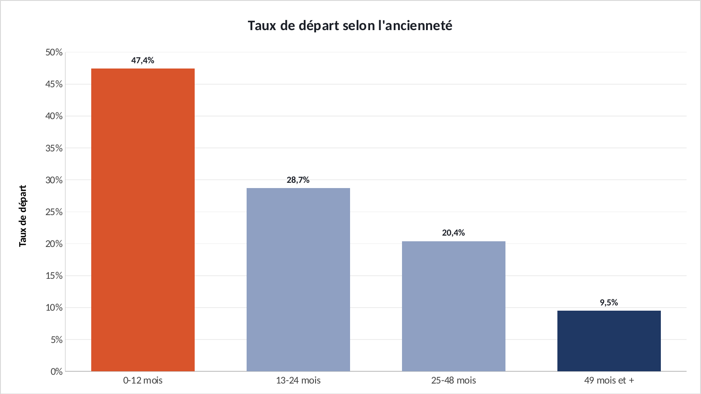
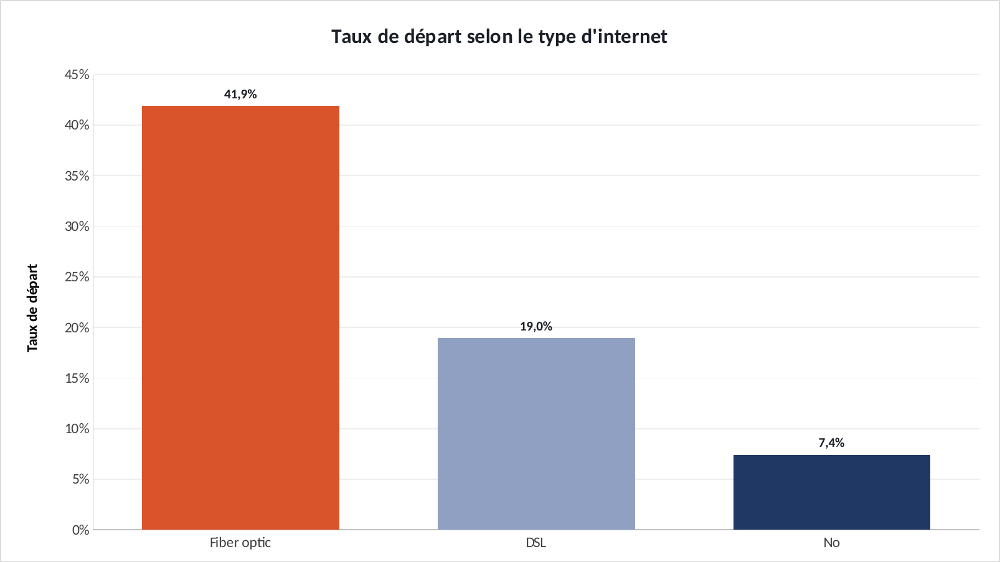

Tuto Excel · 45 min
Refaire les graphiques du projet dans Excel.
« Où se concentre le risque de départ client ? » : chaque graphique de l'étude, clic par clic, avec les formules. Ouvrez l'exercice et suivez.
Ce que vous allez pratiquer : SI imbriqués · tableau croisé dynamique · NB.SI et NB.SI.ENS · histogramme avec étiquettes.
00 · Avant de commencerTrois réglages
- Téléchargez le fichier exercice et ouvrez-le dans Excel. Les cellules jaunes sont à remplir, les graphiques sont à construire.
- Le fichier corrigé contient la version finie : c'est de là que viennent les graphiques du site. Ouvrez-le à côté pour comparer.
- Les formules sont écrites pour Excel en français : les arguments sont séparés par
;. En anglais, remplacez;par,et utilisez le nom entre parenthèses. - Recopier une formule vers le bas : sélectionnez la cellule, puis double-cliquez sur le petit carré en bas à droite.
Les couleurs du portfolio : bleu #1F3864, orange #D9542B, gris #8FA0C2. Pour les appliquer : clic droit sur une série → Mettre en forme une série de données → pot de peinture Remplissage et trait → Remplissage uni → Couleur → Autres couleurs → onglet Personnalisées → champ Hex.
01 · Onglet ClientsClasser les clients par ancienneté
7 043 clients. On range chacun dans une tranche d'ancienneté pour pouvoir comparer.
1.1 La tranche
- En F5, puis double-clic sur la poignée : Excel recopie jusqu'à la ligne 7047.
| Cellule | Formule (Excel en français) | En anglais |
|---|---|---|
| F5 | =SI(B5<=12;"0-12 mois";SI(B5<=24;"13-24 mois";SI(B5<=48;"25-48 mois";"49 mois et +"))) | IF |
✅ Vérifiez : Le client de la ligne 5 (ancienneté 1 mois) est en « 0-12 mois ».
02 · Onglet AnalyseCalculer les taux de départ
Deux méthodes, au choix. La première est la plus rapide, la seconde se met à jour toute seule.
2.1 Méthode rapide : le tableau croisé dynamique
- Onglet Clients : cliquez dans le tableau → Insertion → Tableau croisé dynamique → Nouvelle feuille de calcul.
- Glissez Contrat dans Lignes, Churn dans Colonnes, Client dans Valeurs (Excel compte les clients).
- Clic droit sur un nombre → Afficher les valeurs → % du total de la ligne. La colonne « Yes » donne le taux de départ.
2.2 Méthode formules (celle du corrigé)
- Onglet Analyse, tableau du contrat (lignes 5 à 7). Recopiez vers le bas.
- Même chose pour l'ancienneté (lignes 11 à 14, colonne F des clients) et l'internet (lignes 18 à 20, colonne C).
| Cellule | Formule (Excel en français) | En anglais |
|---|---|---|
| B5 | =NB.SI(Clients!$D$5:$D$7047;A5) | COUNTIF |
| C5 | =NB.SI.ENS(Clients!$D$5:$D$7047;A5;Clients!$E$5:$E$7047;"Yes") | COUNTIFS |
| D5 | =C5/B5 | — |
| D23 | =NB.SI(Clients!$E$5:$E$7047;"Yes")/NBVAL(Clients!$E$5:$E$7047) | COUNTA |
✅ Vérifiez : Mensuel 42,7 %, 1 an 11,3 %, 2 ans 2,8 % : 15 fois plus de départs sans engagement. Global : 26,5 %.
03 · Onglet AnalyseLes trois graphiques
Un histogramme par segment, avec le taux affiché sur chaque barre.
3.1 Le graphique
- Sélectionnez A4:A7, maintenez Ctrl, sélectionnez D4:D7 → Insertion → Histogramme groupé.
- Bouton + → Étiquettes de données. Supprimez la légende. Barre la plus risquée en orange (clic, puis deuxième clic sur la barre).
- Recommencez avec A10:A14 + D10:D14 (ancienneté) et A17:A20 + D17:D20 (internet).
✅ Vérifiez : Ancienneté : de 47,4 % la première année à 9,5 % au-delà de 4 ans. Fibre : 41,9 %.

Résultat attendu, exporté du fichier corrigé.

Résultat attendu, exporté du fichier corrigé.

Résultat attendu, exporté du fichier corrigé.
BonusExporter un graphique
- Cliquez sur le bord du graphique pour le sélectionner, puis clic droit → Enregistrer en tant qu'image… → format PNG.
- Pour une diapo : clic droit → Copier, puis Collage spécial → Image dans PowerPoint.
BonusLa même chose dans Power BI
Accueil → Obtenir des données → Texte/CSV → choisissez le fichier → délimiteur Point-virgule → Charger.
| Fichier | Visuel | Champs |
|---|---|---|
clients.csv | Histogramme groupé | Axe X : contrat · Valeurs : client (Nombre) · Légende : churn, puis « Afficher en % du total de la catégorie » |
Si les décimales s'affichent mal : Transformer les données → colonne → Type de données → Nombre décimal → Utilisation des paramètres régionaux → Anglais (États-Unis).